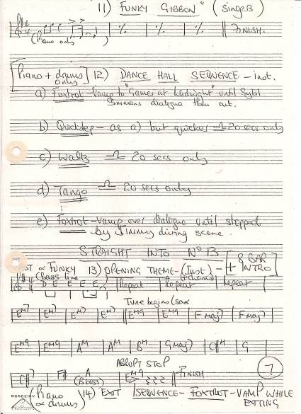
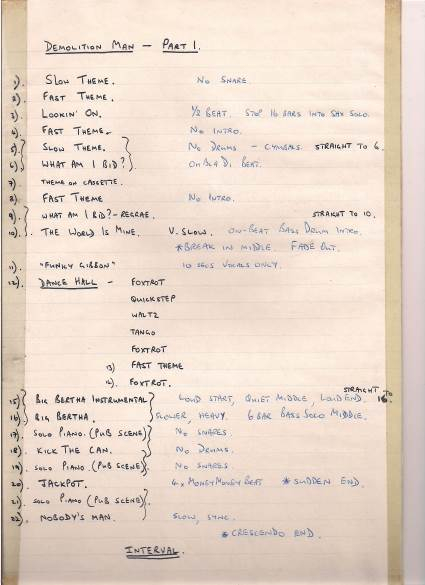
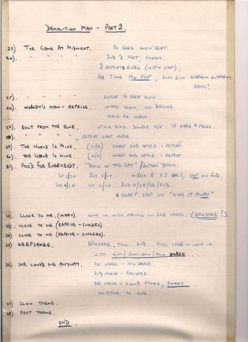

Biography: Alan Ratcliff
I don’t remember the rehearsals, other than the memory-impression that they were a challenge. I don’t remember the performance. I think I was quite occupied... but I DO remember the feelings... The slight nerves as I drove into Manchester Centre – on a weekday, with lots of people that work there – and parking outside the Exchange and looking where to go and unloading my gear before driving off to park the car for the whole day. I’d played in lots of places – pubs and nightclubs – but not in the City centre, not turning up in the rush hour. And of course, the elation at the end – we’d made it, and the audience were pretty enthusiastic, too, he says understatedly...
But, going back to the beginning... Chas Coghill and I had been in more bands together than ‘Soft Mick’, as the expression goes. I knew of Chris Dumigan from school, although he was a school year higher than me. And I went to school with Chris Fogg – he always was a genius at English. In my early days I had played in dance bands (useful later!), military drumming, rock, and of course, anything Beatles-ey. Chas and I had really been into what is now referred-to as progressive rock – particularly Pentangle, Cream, Jethro Tull, Caravan, Yes and such like. We had lost touch a bit – I went to University in 1970, sold my drums to help pay for a small wedding, but by 1975 was starting to play again.
So in 1976 Chas asked if I was interested in playing in an amateur theatre group – the answer was easily yes, but the first production (Hair) coincided with me just starting my own business and I was pretty busy... A year later Demolition Man came around, and the little cassette recording of the original TV musical seemed quite technical musically – lots of styles, lots of stopping and starting etc – as opposed to just playing regular songs. Yes, the musical style – the ‘Shaft’ theme style – was a little bit corny – but that was balanced by it being another Genesis ‘first’ – it had only ever been a TV musical, so it was a challenge...
Could I play from music? [I assumed drum music, like Scottish pipe band music – a bit rusty, but yes]. Could I read music written for other instruments? Well, yes – I used to transpose music for the dance band and had written a few songs meself, like. By now I was wondering just what I was letting myself in for.
I’d quite got into a kind of subtle-Ginger-Baker style of drumming – hitting lots of drums and doing lots of ‘fills’ whilst attempting panache at the same time. So the relative strait-jacket of playing something already created in the TV musical and written down in a musical score sounded a bit daunting. However, I didn’t worry for long – our maternal figure – the Musical Director – had it all in hand.
The tightness that the score and existing music brought (well, utterly ragged in the first couple of rehearsals!) was enhanced by the quality of my colleagues’ musicianship – just listen to Chas’s guitar work – it was as good as Nile Rogers any day – or Alan Barnes’ sax playing. You won’t hear anything better from around that time, anywhere. Not even on tracks like ‘Money’ or ‘Us and Them’ from ‘The Dark Side Of The Moon’ by Pink Floyd.
Playing in a 6-piece band is not difficult when you are playing ‘conventional’ songs – verse, verse, chorus, verse, chorus, middle-eight etc etc because the structure can be learned through a few rehearsals. Playing a musical like Demolition Man is far more testing because it is more like an orchestral piece – lots of stopping, starting slowing down, speeding up – all 6 people together. And it has to be spot-on – there are a whole bunch of actors, performers and singers who have been working on the same songs – separately, with Chris Dumigan – who are dependent upon the music being exactly as expected – no ad libs, no sneaky fills, no individualistic show-ponying, nothing!
So my dance band experience proved useful, particularly when the lovers travel around the world (with Chris Fogg’s cyclic use of the various speakers-in-the-round creating an amazing sense of globetrotting for the audience) experiencing a smorgasbord of music – tango, quickstep, disco, funk, rock’n’roll, jazz, blues, r’n’b (as it was in those days), waltz, rumba. Figure 1 is the music for songs #11 – ‘Funky Gibbon’, #12 – ‘Dance Hall’ and #13 – Opening Theme Instrumental. The Dance Hall music has Chris’s writing – Foxtrot / Quickstep / Waltz / tango / Foxtrot, 20 seconds of each.
Figure 1 – a page from Chris’s score
But what was REALLY useful were my own crib notes – so I had Chris’s score on one stand and my drummer’s notes on another – see Figures 2 and 3, below. For each song I had notes such as “No snares”, or “*Break in the middle, fade out”. The Dance Hall sequence is in Figure 2. Figure 3 has an interesting note against song #35 – ‘Keepsakes’ – “Brushes, till end. Fuzz Lead – Come in with Bum/Bum-Bum/Roll SMASH”. Intellectual stuff, hey!
Figure 2 – Drummer’s Notes Part 1 !!Figure 3 – Drummer’s Notes Part 2 !!
I recall that we rehearsed quite a lot in the evenings and weekends, but of course Chris D did more than twice that because he was rehearsing the actors and singers, too! Unfortunately, time has erased the detailed memories of those rehearsals. We all religiously played from the written music, continually cajoled, threatened, moaned-at and generally bullied into getting more and more bits right. And Chris D knew EXACTLY how he wanted it. Not really so much a taskmaster, but a truly excellent musical director.
Being asked to perform at The Royal Exchange had always felt a fairly cool and privileged thing to do – by 1977 it had been open for a year since the rebuild, and the refurbishment and sound quality, never mind the fact that it was in the round and therefore unbelievably advanced and famous, meant that turning up on the morning of the show and humping my drum kit inside was slightly awe-inspiring. In retrospect, I’m glad that I didn’t fully appreciate the story or grandeur of The Royal Exchange otherwise I would have been even more nervous. The rest of the theatre group arrived over the next hour, we set up, and got wired up. I don’t remember much about the rehearsals. It seemed to be quite public – particularly around lunchtime when people could freely come and go in the Exchange. Being red-haired and bearded, and with a fairly gaunt face, apparently a few of the lunchtime visitors had asked if Ginger Baker was inside, rehearsing.
The intimacy of the Exchange meant that, by the time the audience started to arrive for the show itself, if felt as if OUR own front room was being invaded. Yes, it WAS our lounge – we had lived in it while we rehearsed and polished the show for nigh on 9 hours that day.
I don’t remember the performance, other than it was electric and energetic, full of final-exam intensity. I guess the concentration on the music didn’t allow for sitting back and observing! Listening back to the recording of the final rehearsal, despite the sound quality, I am hugely impressed at the tightness of the band and the performers. We had obviously been expertly directed and highly polished. I certainly remember the adrenaline-crescendo as we got to the end, and that stroke of genius, handing food out to the audience. The ovation at the end was as staggering as it was unexpected but hoped-for. Not only had we made it all the way through without any catastrophes, but the audience actually loved it. The adulation that we felt would never be topped – or so we thought then.
However, that wasn’t the end of Demolition Man. A few months later, I heard that Louis Grant, the leading actor, was going to audition for a major show. I always thought retrospectively that he was going to be auditioning for Brookside - but chronologically that can’t have been the case – he was in the first episode of Brookside in 1982 and this was 1977. Anyway, he apparently felt that a recording of a few key songs from Demolition Man would showcase his undoubted abilities and voice. So the call came – could we do it again for a day? The cast re-grouped upstairs at a pub in Salford – The Two Brewers, I believe. I set up in one corner, with the rest of the band to my right. Straight in front of me were the cast members and singers. Diagonally opposite me was a large mixing desk. In fact, I don’t know who they were, but somebody had brought in some pretty professional recording engineers. I’d recorded before, but usually with one microphone in front of the bass drum and one hanging over the rest of the kit. On this occasion, the bass drum, the tom toms, the hi-hat, the snare, and the cymbals all had microphones. Particular attention was placed on the mike on my hi-hat – the musical style was very much the ‘Shaft’, American detective music, with a lot of double-double-time beating on the hi-hat, and the engineers wanted to pick that up. And one thing I DO remember is clocking the fact that once we started, the rhythm had the singers jigging on the spot. Can’t have been that bad, then... Unfortunately, the proximity of the mikes means that I can hear a few little taps and knocks in the recording, so it wasn’t a perfect studio session.
I hadn’t heard the recordings between then and 2014. But boy, after 37 years, I was impressed! What a band, what singers, what voices, how tight, and how professional!!! Needless to say, Louis got his role, went on to Brookside and became a household name.
But little ole us, amateurs from Urmston, had blown the Royal Exchange away. The newspapers said so. And the pride in my chest says so, too.
Thanks Chris D and thanks Chris F – at the time I never realised I was part of a memory that I would cherish so much.